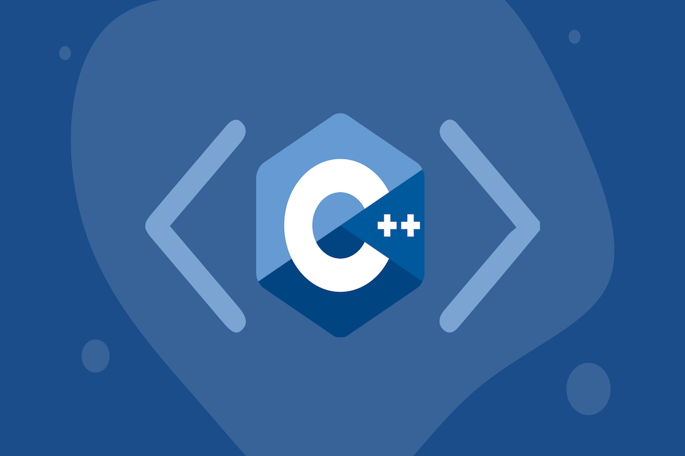
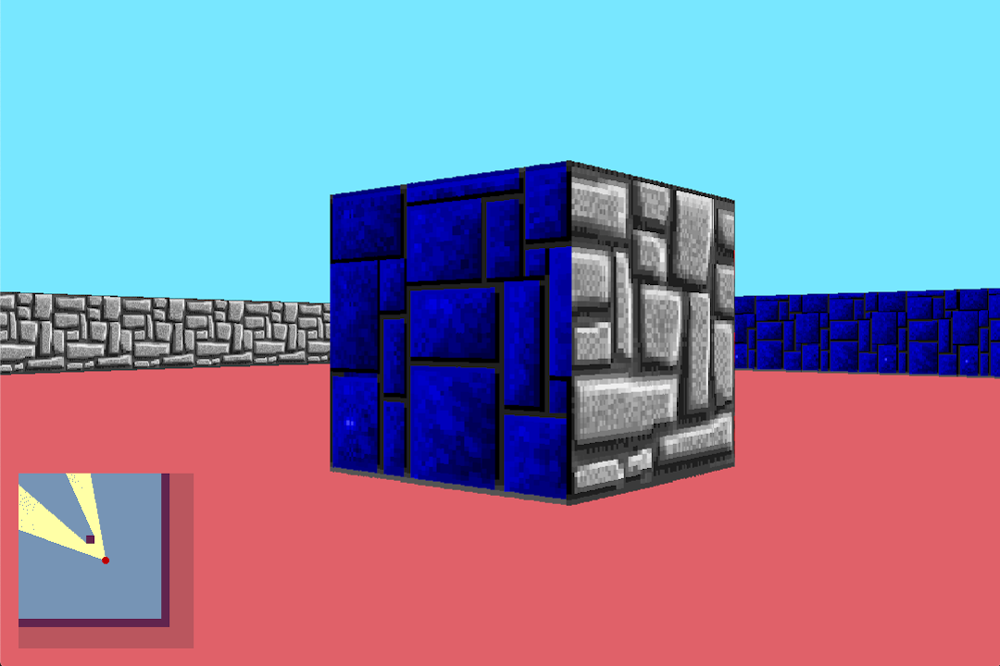
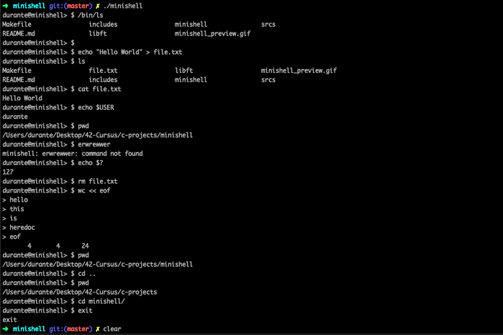
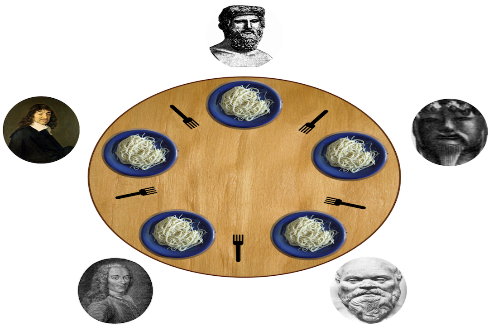
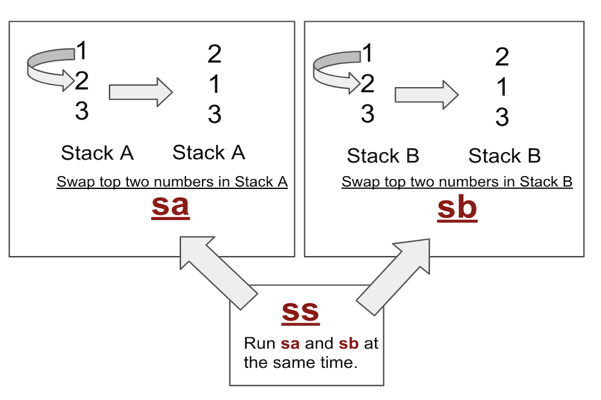
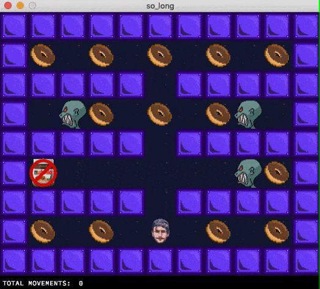
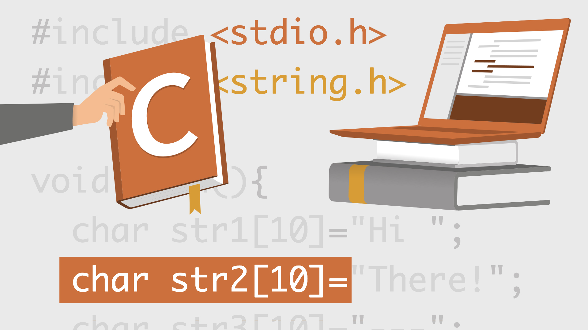

42 school projects
42 is a global education initiative that offers a new way of learning technology: it's open 24/7,
no teachers, no classrooms, students decide how to manage their time, learning from their
fellow students (peer to peer learning), with a methodology that develops both computing and life skills.
Here you will find all the projecst I made and the ones i'm still working on, feel free to check the repos linked on each one.
C, C++, Data structures
Implementation of some of the various container types in the C++ standard template library, such as std::vector, std::map... etc.
C, C++

An introduction to OOP and lots of exercises covering classes, inheritance, polymorphism, templates... the way to dive into some C++ basics.
C, RayCasting, Graphic library

A first-person 3D representation of a map using ray-casting algorithms, inspired by the legendary game Wolfenstein 3D.
C, Unix

Implementation of a shell program replicating bash, capable of parsing a prompt and launch executables, redirect I/O, and a few built-in functions.
C, multi-threading

Implementation of the famous dining philosophers problem, learning multi-threads/multi-process programing with the use of mutex.
C, sorting algorithms

An introduction to sorting algorithms, the program must sort a list of integers using the less number of instructions possible using only two stacks.
C, Graphic library

A basic 2D game programmed in C and an introduction to a graphic interface using the mlx library.
C

This project is pretty straight forward, I had to recode the printf function in C. A good exercise and way to learn about variadic functions.
C
Write a function that will read a line from a given file descriptor.
C
This is the very first project I had to face as a student. It is quite simple: replicate some very useful functions from the standard library in C.